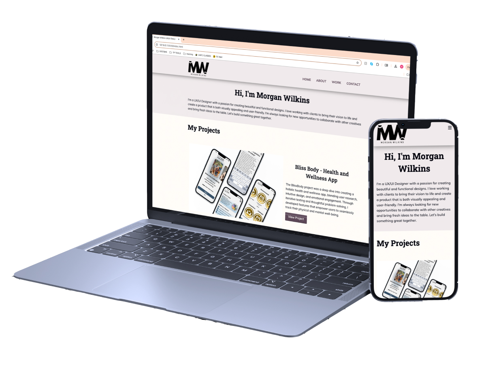
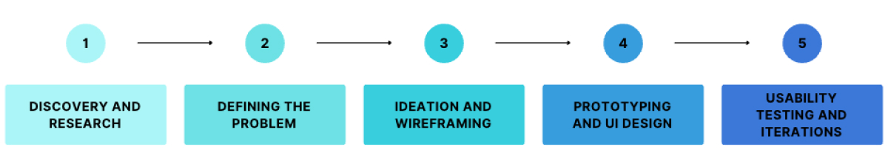
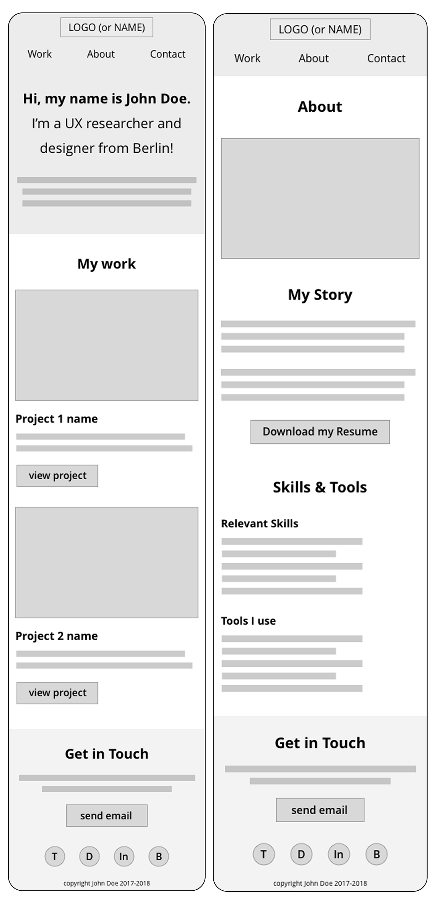
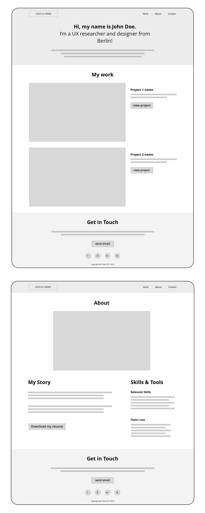
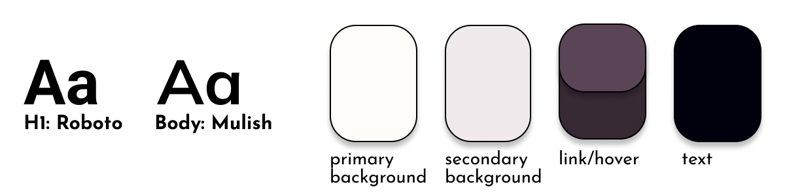
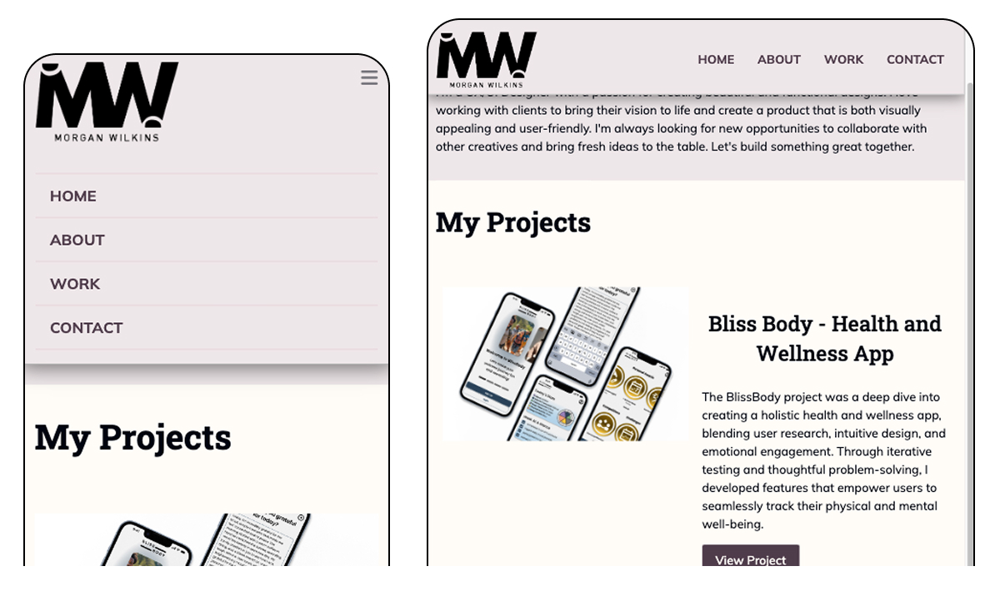
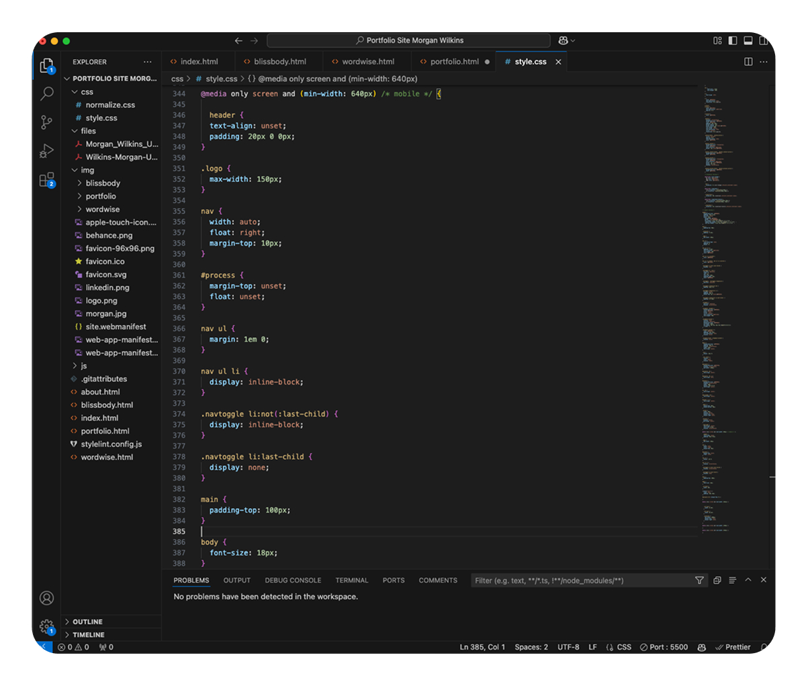
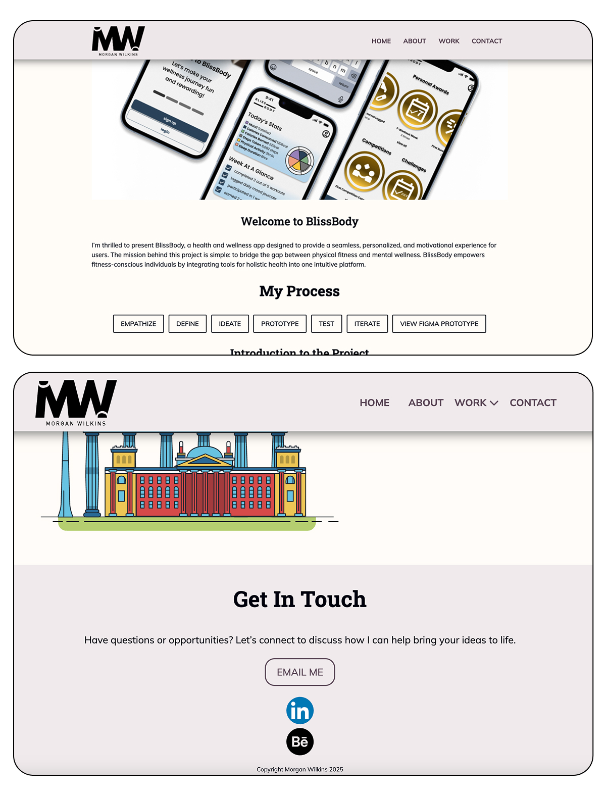

Designing My Portfolio: A Case Study

Overview
Creating my portfolio website was an opportunity to apply UX principles, visual design, and front-end development to craft a seamless and engaging experience. The goal was to design a site that effectively showcases my work while ensuring usability, accessibility, and responsiveness across devices. This case study details my process from research and ideation to design, development, testing, and iteration, highlighting my ability to solve complex design challenges through a structured, user-centered approach.
Roles and Responsibilities
- UX/UI Design – Conducted research, wireframed, and designed the interface.
- Web Development – Developed a responsive site using HTML, CSS, JavaScript, VSCode and GitHub.
- Content Strategy – Curated case studies and structured information for clarity.

Understanding the Problem
A strong portfolio is more than a collection of projects; it should serve as a narrative of skills, process, and design thinking. Before jumping into the design, I needed to define the problem I was solving:
- What makes a portfolio effective?
- How can I balance personality with professionalism?
- What information do hiring managers prioritize?
- How do users navigate portfolio sites, and where do they encounter friction?
Key Insights from Research:
- Clarity is crucial – Hiring managers scan sites quickly. Content should be digestible and structured logically.
- User journey must be intuitive – Visitors should effortlessly navigate from the homepage to case studies and contact information.
- Performance matters – Slow load times and poor mobile experiences negatively impact engagement.
- Personal branding strengthens recall – A unique yet professional aesthetic creates a lasting impression.
These insights informed my design principles, ensuring that the site would be clean, professional, and engaging while optimizing the user experience.
Design and Development Process
Wireframing and Information Architecture
Before diving into visuals, I outlined the content hierarchy to ensure a logical flow. I mapped out:
- Homepage layout and key sections
- Case study formats
- Navigation structure
- Contact and about pages
With this framework, I used the following low-fidelity wireframes provided by the Career Foundry project brief.


Visual and UI Design
With the wireframes finalized, I shifted to refining the visual identity. My goal was to create a modern, minimalist aesthetic that balances professionalism with a touch of personality.
Key UI considerations:
- Color palette – Neutral tones with an accent color to maintain a sleek yet engaging feel.
- Typography – Selected a clean, readable font pairing for hierarchy and accessibility.
- Imagery and Layout – I curated a selection of project images that showcase my work effectively and balanced white space with structured content blocks for clarity.
- Microinteractions – I added subtle hover effects and animations to enhance user engagement.
At this stage, I also considered responsive design to ensure adaptability across various screen sizes.

Development and Prototyping
Once the designs were finalized, I transitioned into development using HTML, CSS, and JavaScript. I built the site with a focus on:
- Mobile-first design: Ensuring full responsiveness across devices including a fixed navigation bar for easy access to key sections with a hamburger menu for mobile view to accommodate less screen space.
- Accessibility: Implementing proper contrast ratios, semantic HTML, and keyboard navigation.
- Performance optimization: Compressing images, minimizing code, and improving load speed.
I conducted initial tests on different screen sizes and browsers to ensure consistency in performance.


User Testing and Iteration
To ensure the portfolio site was intuitive, accessible, and effectively communicated my skills and process, I conducted usability testing with participants from various backgrounds, including a Digital Media Manager, UX Researcher, and Recruiters.
Key Findings and Insights
- Navigation and Information Hierarchy
- Most users easily found the About Me section and suggested it could be more prominent on the homepage. Recruiters wanted key information upfront rather than buried in secondary pages.
- Fixed navigation was intuitive and appreciated. However, some users had trouble identifying the homepage at first.
- The logo linking back to the homepage was seen as intuitive, but a clearer home button could improve accessibility.
- Case Study Readability and Structure
- Users found the project pages in-depth and informative but noted that they required a lot of scrolling.
- A “Jump to Section” navigation or internal links within the case study were suggested to make it easier to navigate between different process stages.
- Some users felt the process overview could be streamlined to provide high-level insights before diving into details.
- Contact and Accessibility
- Having multiple contact options was a strong point, with LinkedIn and email being the most preferred.
- Some users had issues with the “Email Me” button not functioning correctly.
- The “Call Me” option was not favored, as users preferred written communication over direct calls.
- Mobile Responsiveness
- Users liked the mobile layout, describing it as clean and easy to navigate.
- Ensuring that the resume button remains visible on mobile was suggested to prevent users from losing access after navigating to another section.
Next Steps and Iterations
- Revise the navigation bar to prioritize the “About” section as the first link.
- Refactor project pages to incorporate internal links or jump navigation for easier case study navigation.
- Refine language and tone to balance professionalism and warmth while avoiding unnecessary pleasantries.
- Fix the email button issue and reconsider the necessity of a “Call Me” feature.
By implementing these updates, the portfolio will provide a more seamless and recruiter-friendly experience while maintaining a strong, engaging personal brand.

Outcome and Reflection
The final portfolio is a reflection of both my UX expertise and front-end development skills, designed with a clear user-centered approach. This project reinforced several key lessons:
- The power of user research – Even personal projects benefit from structured research and iteration.
- Balancing aesthetics with functionality – A clean, modern design must still be practical and easy to navigate.
- Testing is crucial – Real users uncover friction points that may not be obvious in the design phase.
- Continuous improvement matters – A portfolio should evolve alongside my career, remaining a dynamic, living project.
This project was both a personal and professional milestone, allowing me to blend UX strategy with technical execution. Moving forward, I will continue refining and updating my portfolio to reflect my latest work and insights.